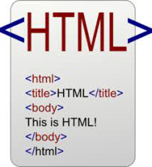
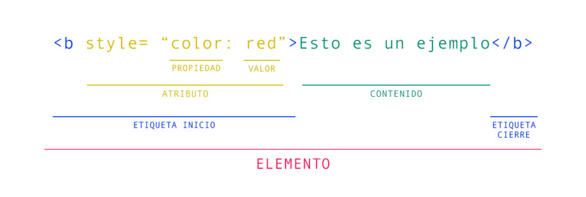

Dinamizar las estrategias de aprendizaje.
Una estrategia la constituyen los Objetos virtuales de Etiquetas Básicas de HTML,
atributos y valores
Tema1 Etiquetas de HTML

El Lenguaje de Marcado de Hipertexto (HTML) es el código que se utiliza para estructurar y desplegar
una página web y sus contenidos. Por ejemplo, sus contenidos podrían ser párrafos, una lista con
viñetas, o imágenes y tablas de datos. Como lo sugiere el título,
este artículo te dará una comprensión básica de HTML y cúal es su función.
fuente:
"Prescott, P. (2015). HTML 5. Babelcube Inc.. "
Tema 2 Estructura principal de una línea de código HTML
Las etiquetas HTML son fragmentos de código que nos permiten crear elementos HTML. Los elementos son
la estructura básica de HTML. Dichos elementos tienen dos propiedades básicas: atributos y
contenido.
Un elemento, para que sea válido, generalmente tiene una etiqueta de inicio ()
y una etiqueta de cierre ().
En este punto cabe destacar que los elementos no son etiquetas. Los elementos están representados
por etiquetas, pero, generalmente por error, se les considera lo mismo. Este contenido es lo que se
verá afectado por la funcionalidad o el significado del elemento.
"Laura, V. R., Bernardo, P., Alberto, L. J., Pablo, F. J., Juberer, M., & Esteban, C. (2019).
Implementation of IT in
Systems Simulation for the Registration Process. Journal of Education and Human Development, 8(4),
177-184"
